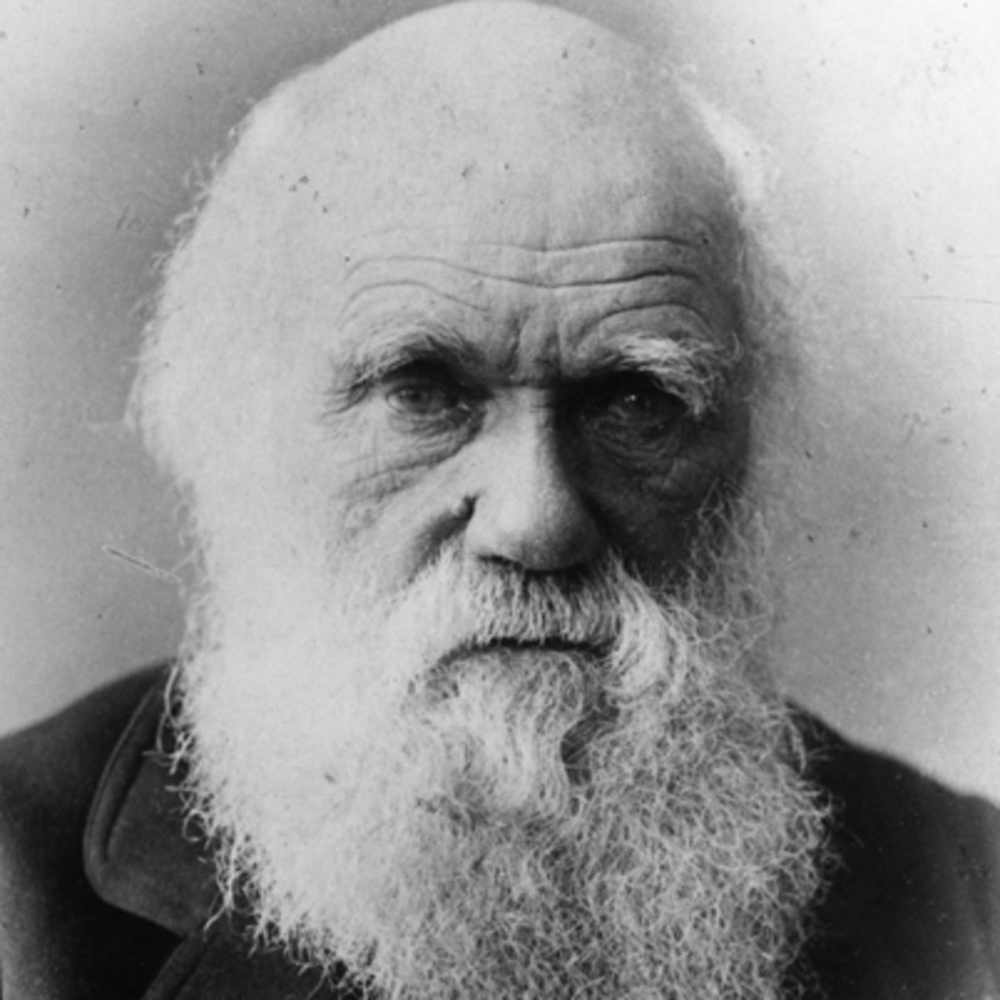
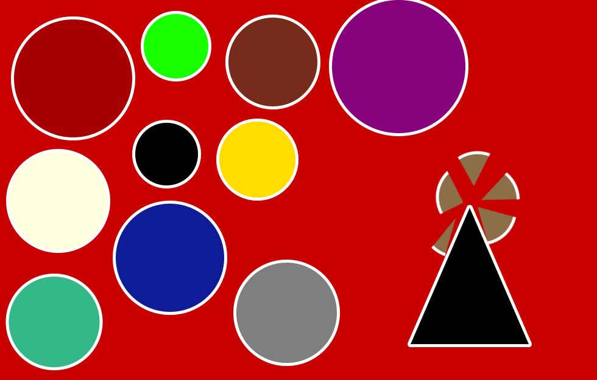
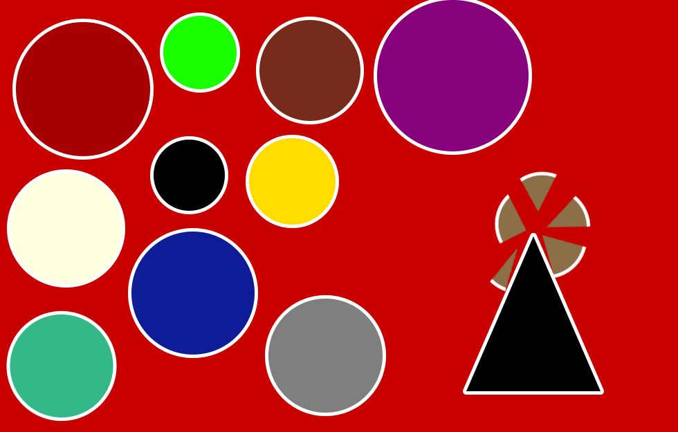
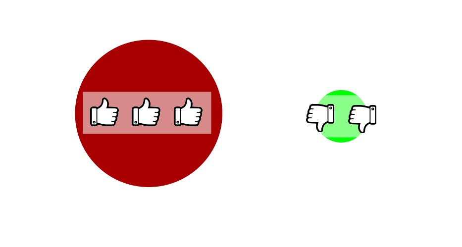
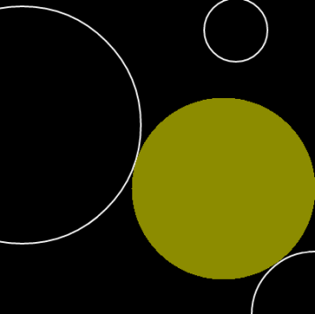
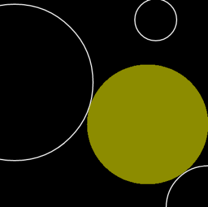
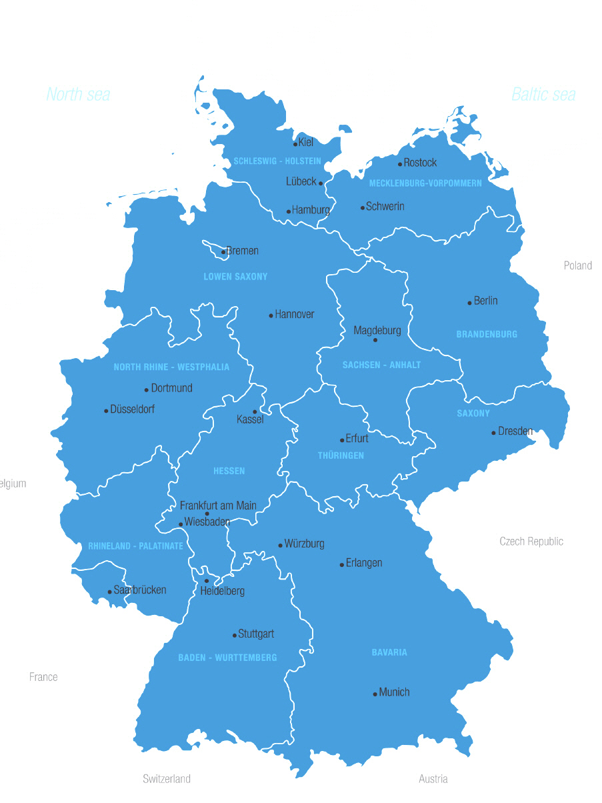
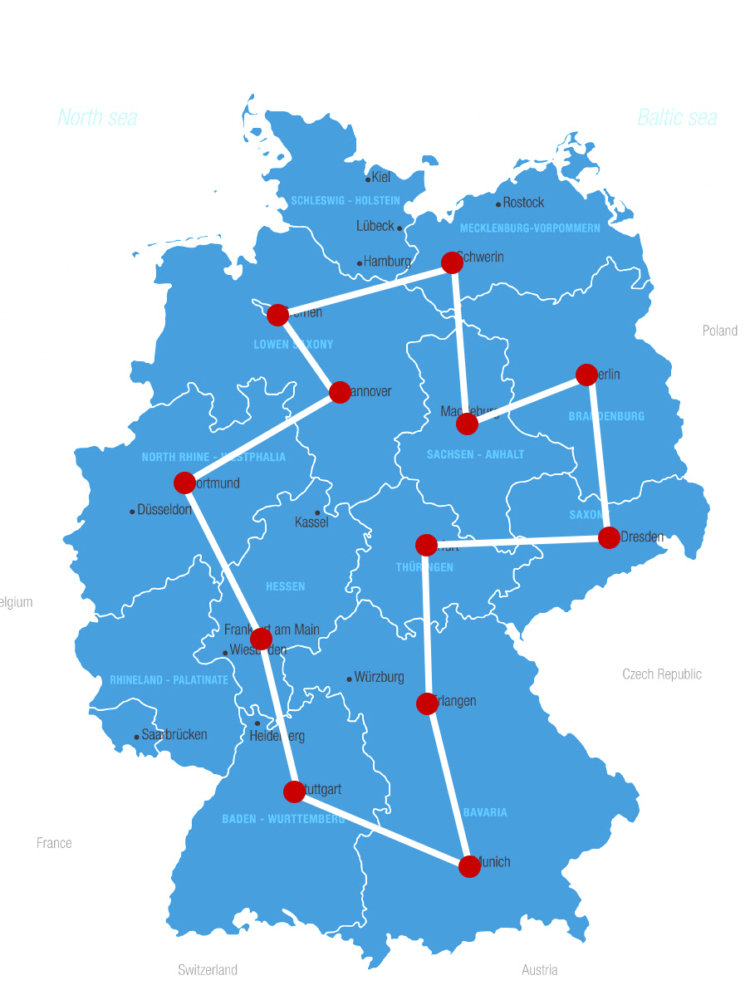

Evolutionary Algorithms 101
Basics and Applications
Manuel Ernst

- from Erlangen, Bavaria Franconia
- Developer & Technical Lead @ Thomann GmbH
- seriousManual @ Github
- @seriousManual @ Twitter
Evolution?
source: https://de.wikipedia.org/wiki/Charles_Darwin
Circleworld


 

Terms: Population

Terms: Recombination

Terms: Mutation
Terms: Selection

Terms: Fitness
Algorithm
Create Population While True Choose Parents Combinate Parents (Recombination) Mutate Offspring (Mutation) Rate Offspring (Fitness) Add Offspring to Population Remove Unfittest Individual (Selection) If Termination Criterion Is Met: End Loop Next
Circles
source: http://blog.eagerbug.com/circles/Circles: Description
- Given: Some circles on a arbitrary playground
-
Task: Find a circle
- ...that does not cross the playground border,
- ...that does not cross another circle
- ...that has a maximum circular area.
 

Circles: Trivial
//TODOCircles: Approach
Initial Population
Arbitratry circles (x- and y-coordinate, radius)Circles: Approach
Fitness
- Crossing the playground border? (Malus)
- Crossing another circle? (Malus)
- How big is the circle? (Bonus)
Circles: Approach
Fitness
var overlapping = number of overlapping circles var outside = crossings with the playground border var area = area of the circle var fitness = area if outside > 0 or overlapping > 0 fitness = fitness * -1 if overlapping > 0 fitness = fitness * 2 * overlapping; if outside > 0 fitness = fitness * 4 * outside;
Circles: Approach
Recombination
Parents:
{x: 100, y: 10, radius: 7}
{x: 331, y: 77, radius: 50}
{x: 100, y: 10, radius: 7}
{x: 331, y: 77, radius: 50}
Child:
{x: 100, y: 77, radius: 50}
{x: 100, y: 77, radius: 50}
Mutation
{x: 103, y: 77, radius: 49}Circles: Implementation
Charakteristics
The chosen approach is never the sameCharakteristics
The choosen approach is not always the optimal oneCharakteristics
The result is not always deterministicCharakteristics
Extreme conditionsCharakteristics
Extreme conditionsTravelling Salesman Problem
http://business-coaching-ulm24.de/seminare/burnoutberaterin.htmlTravelling Salesman


TSP: Trivial
13 cities: (n - 1)! / 2 combinations
-> 239500800 possible solutions
@ 10k tests every second: 6.6h
-> 239500800 possible solutions
@ 10k tests every second: 6.6h
Travelling Salesman
Possible Way:1 -> 2 -> 3 -> 4 -> 5 -> 1
Parents:
5 -> 3 -> 1 -> 4 -> 2 -> 5
2 -> 4 -> 5 -> 3 -> 1 -> 2
5 -> 3 -> 1 -> 4 -> 2 -> 5
2 -> 4 -> 5 -> 3 -> 1 -> 2
Child:
5 -> 4 -> 1 -> 3 -> 2 -> 5
5 -> 4 -> 1 -> 3 -> 2 -> 5
Mutation
5 -> 4 -> 1 -> 2 -> 3 -> 5
5 -> 4 -> 1 -> 2 -> 3 -> 5